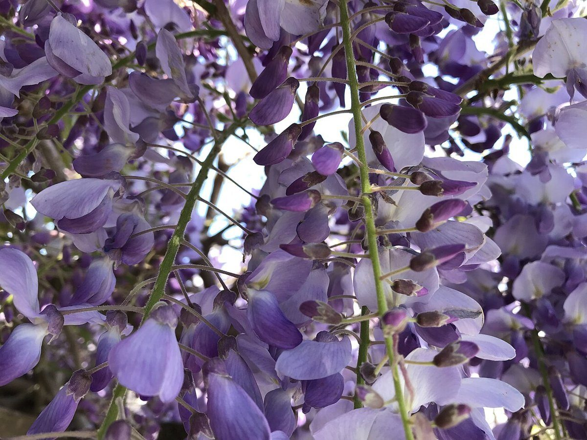

制作側の連想
「ブルーム」を、果粉のブルームに見立てて
店名の由来は分かりません。制作側は「ブルーム(bloom)」という言葉から、ぶどうやブルーベリーの皮にうっすらつく白い粉、「果粉(ブルーム)」を連想しました。触れると消えて、下から艶のある色が出てくる、あの粉です。そこでこのサイトは、写真の上に薄い曇りをかけ、指やカーソルで拭うと晴れる作りにしています。制作側の連想で、お店の理念・由来とは無関係です。
写真にふれる(タップ・カーソルを重ねる)と、曇りが晴れます。
three stages
曇りから艶まで、三つの段階(イメージ)
- 曇り

国外のイメージ(ドイツ) 薄い粉をまとった状態。ここでは霜のついた葉で表しました。
- ひと拭き

国外のイメージ(スロベニア) 触れたところから、下の色が現れます。水滴で表しました。
- 艶

撮影地不明のイメージ 拭いたあとの、深い色の実。青紫の実で表しました。
info
お店のこと(確認できたものだけ)
| 所在地 | 〒854-1112 長崎県諫早市飯盛町開1834-1 |
|---|---|
| 電話 | 080-8370-4602 |
| 営業時間 | 準備中 |
| 定休日 | 準備中 |
| ご予約 | 準備中 |
| 駐車場 | 準備中 |
| SNS | Instagram @cafe___bloom |